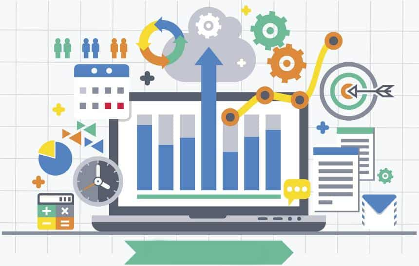

Como implementar uma plataforma moderna de Business Intelligence e Analytics
(Foto: Molnia / iStock)
Redação Olhar Digital
"Business Intelligence" e "Analytics" são dois termos que têm sido cada vez mais usados no cotidiano de líderes e empresas conectadas à era digital.
Num mundo que gera cada vez mais dados, respostas e informações sobre como o cliente lida com o produto, é imprescindível que toda empresa dedicada tenha um
plano de negócios bem estruturado para atender às demandas do público.
Nesse sentido, Business Intelligence (B.I.) e Analytics é o conjunto de métodos, processos e
tecnologias que ajuda um negócio a entender seus desafios, compreender o cliente e se ajustar de acordo, levando em conta, claro, a informação gerada pela
era digital.
Pense, por exemplo, em como uma grande empresa como a Apple é capaz de identificar quais são os problemas com seus produtos e como melhorá-los
em gerações seguintes. Não basta ter o instinto, como se fazia décadas atrás. É precisocoletar dados, números, identificar tendências e padrões de comportamento
que indiquem qual caminho deve ser seguido.
Implementar um choque de gestão como esse nos negócios, porém, nem sempre é fácil. O processo todo exige
dedicação de todas as partes envolvidas para colocar a tecnologia de coleta e análise de dados em primeiro lugar, e deixar a famoso método de
"tentativa e erro" no passado.
Ainda assim, apenas pagar para que uma empresa especializada traga B.I. e ferramentas de Analytics para os seus negócios não é
suficiente. Implementar uma boa estrutura de coleta e análise de dados é só o primeiro passo rumo a uma transformação digital que pode, e deve
liderara sua empresa pelas próximas fases dessa nova era do mercado.
O instituto de pesquisa Gartner oferece cinco dicas para quem quer implementar uma plataforma
moderna de B.I.e Analytics e ter sucesso com suas aplicações.